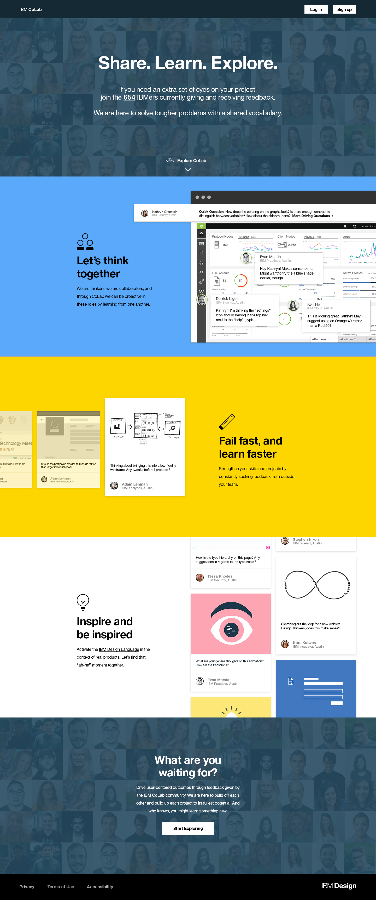
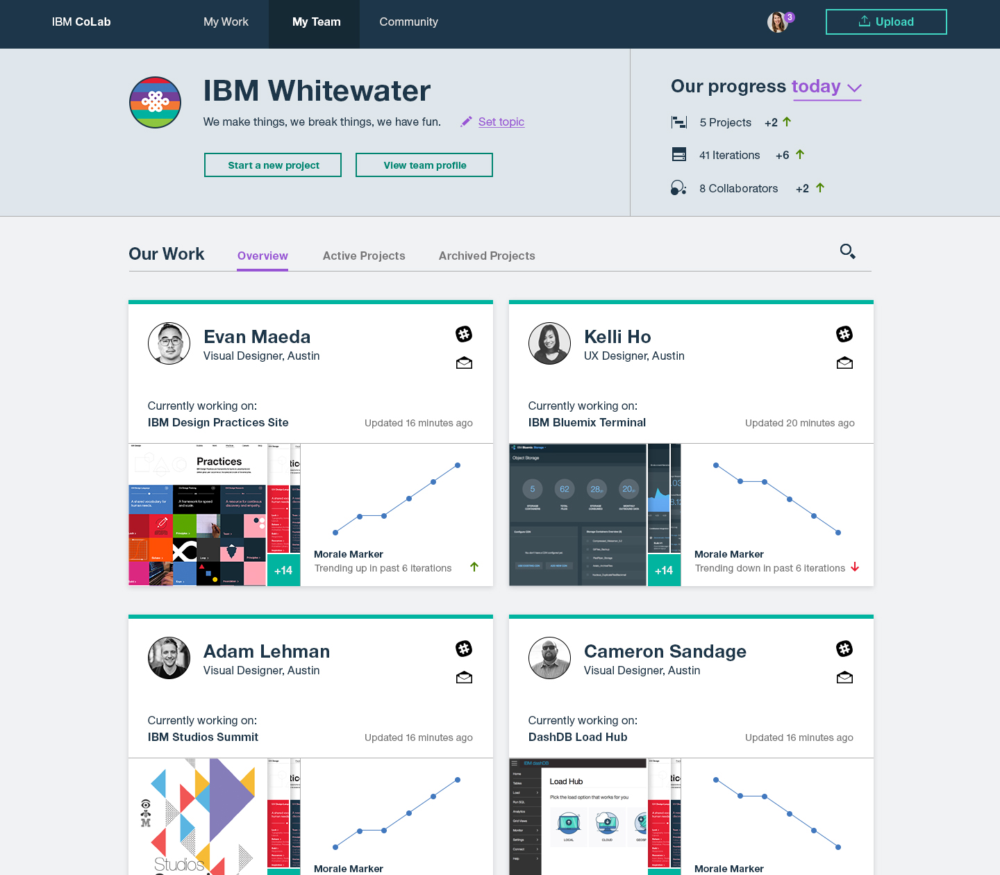

I'm a developer and designer based in Boston, MA.
During the summer of 2016, I got the opportunity to work in a group of five interns at IBM Design to research, design, and create an internal, online collaboration tool for the global IBM Design network. Over the course of seven weeks, I worked with another developer to create a fully functional webapp using Angular 2, Node.js, Sass, Express, MongoDB, and new es6 and es7 components to create IBM Colab, a platform to promote transparency and reflection across all 33 IBM Design studios. My main role throughout the summer was as a front-end developer, but I also gained experience in design research and UX design during my time there. During the fifth week of the internship, my team released our beta to the whole of IBM Design, at which point we began to research how our users interacted with the platform. From here, we created a vision for the next iteration of CoLab, and this vision has been passed onto the community to create. The images you see on this page are a both snapshots of our process and mock-ups of what we hope CoLab will eventually become.
 